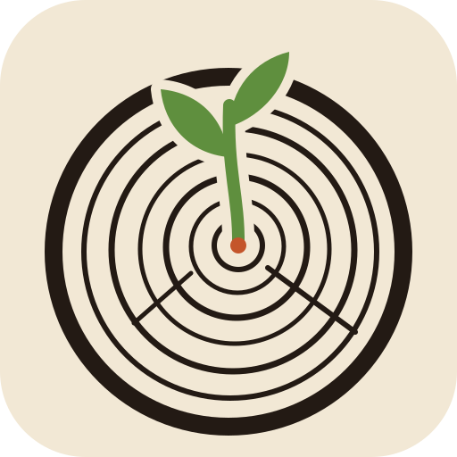
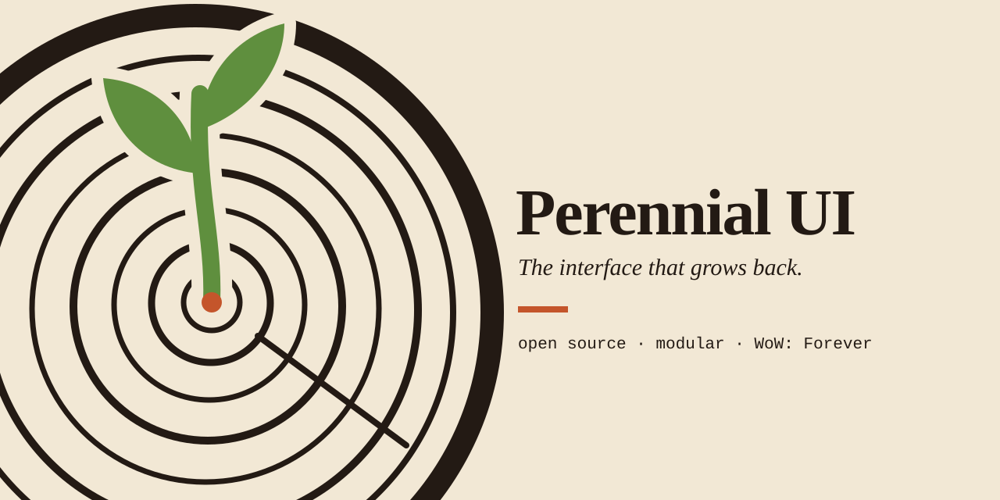
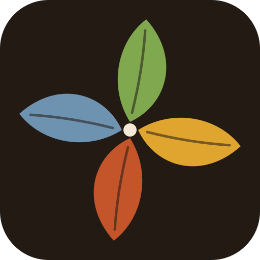
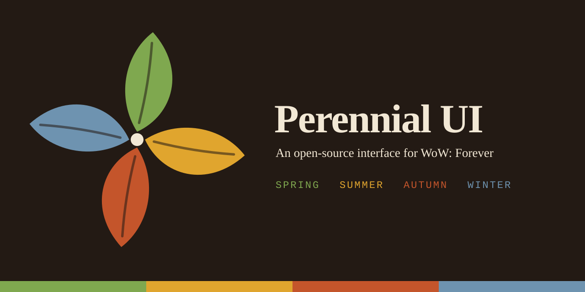
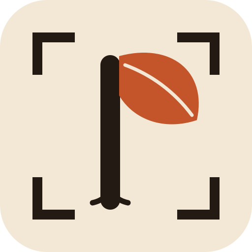
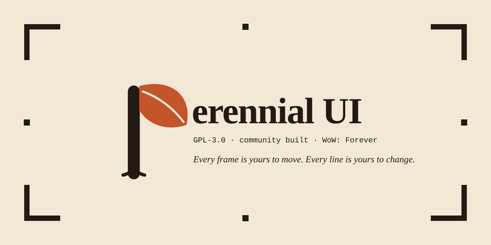

Each icon is shown at 256, 64 and 32 pixels (the addon list shows it small), on light and dark. Headers are 1280 by 640, the size GitHub uses for a social preview. Wordmarks use a system serif as a stand-in until an openly licensed font is chosen.
A cut stump with a new shoot coming out of the centre: it was cut down and it grew back. Ink-on-paper, woodcut feel.


Four leaves in the four theme colours, turning like a wheel: spring, summer, autumn, winter. It doubles as a four-petalled flower and shows the theme system in the mark itself.


A letter P whose bowl is a leaf and whose stem has roots, inside the corner handles of layout mode. It says "interface you can rearrange" first and "plant" second.

